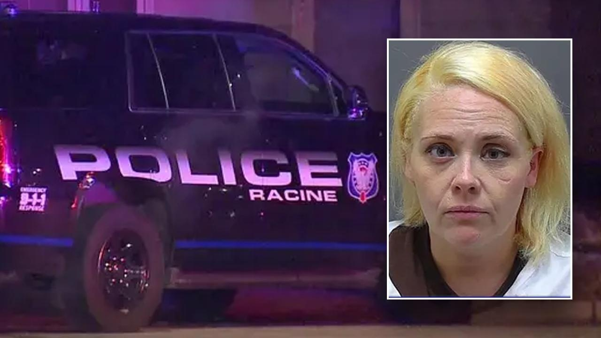

Wisconsin woman accused of using Apple AirTag to stalk ex-boyfriend: reportA Wisconsin woman was accused of using an Apple AirTag to track her ex-boyfriend, FOX6 Milwaukee reported. Amanda Rasmuson, 36, of Racine, is facing two counts of misuse of a GPS device and two counts of violation of an injunction, according to a criminal complaint obtained by FOX6 Milwaukee. On Jan. 21, Racine police responded to a home for a civil complaint. Upon arrival, a woman told officers that she had an active restraining order against Rasmuson through August 2026, the complaint stated. According to the complaint, the woman told police that she owns a vehicle that is driven by Rasmuson's former boyfriend. She stated that she located "a tracking device, Apple AirTag, under the trunk area of the car," the complaint read. Officers determined that "based on the cleanliness of the device and the recent weather, it appeared the device had not been there long since there was no dirt or grime on it," the complaint stated. Several days later, after the first report, the same woman reportedly told police she "located an Apple AirTag on her Toyota vehicle." Investigators were able to tie Rasmuson to the reports and name her as a suspect. During an interview with investigators on Wednesday, April 24, police said Rasmuson originally denied the accusations being made against her, but then changed her tune, and "admitted to placing the AirTag on the Nissan, so she could place herself at the same place as her (ex-boyfriend) and thereby make (the woman) mad," the complaint read. She also admitted to placing the AirTag on the woman's Toyota and that she used an old phone number to track the AirTag, the complaint read. Rasmuson made her initial appearance in Racine County court on Friday, April 26 and her cash bond was set at $500, FOX6 Milwaukee reported. |
 |